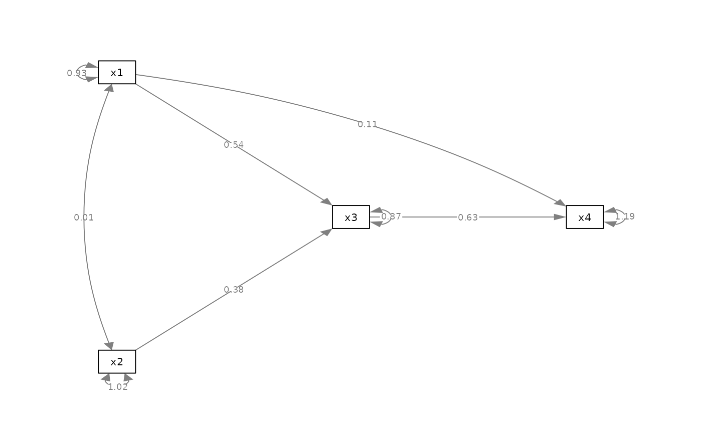
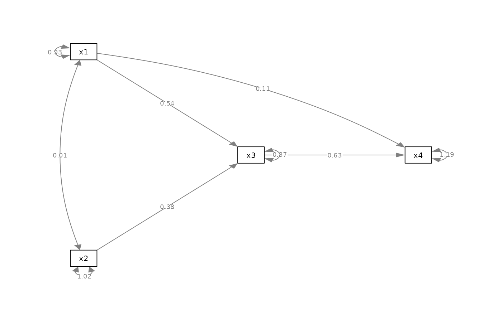

Set the curve attributes of selected edges.
Arguments
- semPaths_plot
A qgraph::qgraph object generated by semPlot::semPaths, or a similar qgraph object modified by other semptools functions.
- curve_list
A named vector or a list of named list. For a named vector, the name of an element should be the path as specified by lavaan::model.syntax or as appeared in
lavaan::parameterEstimates(). For example, to change the curve attribute of the path regressingyonx, the name should be"y ~ x". To change the curve attribute of the covariance betweenx1andx2, the name should be"x1 ~~ x2". For example,c("y ~ x1" = -3, "x1 ~~ x2" = 2)change the curve attributes of the path fromx1toyand the covariance betweenx1andx2to -3 and 2, respectively. The order of the two nodes may matter for covariances. Therefore, if the curve of a covariance is not changed, try switching the order of the two nodes. For a list of named lists, each named list should have three named values:from,to, andnew_curve. The curve attribute of the edge fromfromtotowill be set tonew_curve.
Value
A qgraph::qgraph based on the original one, with curve attributes for selected edges changed.
Details
Modified a qgraph::qgraph object generated by semPlot::semPaths and change the curve attributes of selected edges.
Examples
mod_pa <-
'x1 ~~ x2
x3 ~ x1 + x2
x4 ~ x1 + x3
'
fit_pa <- lavaan::sem(mod_pa, pa_example)
lavaan::parameterEstimates(fit_pa)[, c("lhs", "op", "rhs", "est", "pvalue")]
#> lhs op rhs est pvalue
#> 1 x1 ~~ x2 0.005 0.957
#> 2 x3 ~ x1 0.537 0.000
#> 3 x3 ~ x2 0.376 0.000
#> 4 x4 ~ x1 0.111 0.382
#> 5 x4 ~ x3 0.629 0.000
#> 6 x3 ~~ x3 0.874 0.000
#> 7 x4 ~~ x4 1.194 0.000
#> 8 x1 ~~ x1 0.933 0.000
#> 9 x2 ~~ x2 1.017 0.000
m <- matrix(c("x1", NA, NA,
NA, "x3", "x4",
"x2", NA, NA), byrow = TRUE, 3, 3)
p_pa <- semPlot::semPaths(fit_pa, whatLabels="est",
style = "ram",
nCharNodes = 0, nCharEdges = 0,
layout = m)
 my_curve_vector <- c("x2 ~~ x1" = -1,
"x4 ~ x1" = 1)
p_pa2v <- set_curve(p_pa, my_curve_vector)
plot(p_pa2v)

my_curve_list <- list(list(from = "x1", to = "x2", new_curve = -1),
list(from = "x1", to = "x4", new_curve = 1))
p_pa2l <- set_curve(p_pa, my_curve_list)
plot(p_pa2l)
my_curve_vector <- c("x2 ~~ x1" = -1,
"x4 ~ x1" = 1)
p_pa2v <- set_curve(p_pa, my_curve_vector)
plot(p_pa2v)

my_curve_list <- list(list(from = "x1", to = "x2", new_curve = -1),
list(from = "x1", to = "x4", new_curve = 1))
p_pa2l <- set_curve(p_pa, my_curve_list)
plot(p_pa2l)